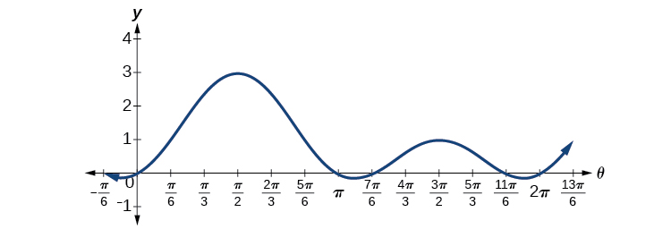
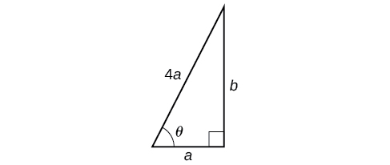

Solving Trigonometric Equations
Thales of Miletus (circa 625–547 BC) is known as the founder of geometry. The legend is that he calculated the height of the Great Pyramid of Giza in Egypt using the theory of similar triangles, which he developed by measuring the shadow of his staff. Based on proportions, this theory has applications in a number of areas, including fractal geometry, engineering, and architecture. Often, the angle of elevation and the angle of depression are found using similar triangles.
In earlier sections of this chapter, we looked at trigonometric identities. Identities are true for all values in the domain of the variable. In this section, we begin our study of trigonometric equations to study real-world scenarios such as the finding the dimensions of the pyramids.
Solving Linear Trigonometric Equations in Sine and Cosine
Trigonometric equations are, as the name implies, equations that involve trigonometric functions. Similar in many ways to solving polynomial equations or rational equations, only specific values of the variable will be solutions, if there are solutions at all. Often we will solve a trigonometric equation over a specified interval. However, just as often, we will be asked to find all possible solutions, and as trigonometric functions are periodic, solutions are repeated within each period. In other words, trigonometric equations may have an infinite number of solutions. Additionally, like rational equations, the domain of the function must be considered before we assume that any solution is valid. The period of both the sine function and the cosine function is In other words, every units, the y-values repeat. If we need to find all possible solutions, then we must add where is an integer, to the initial solution. Recall the rule that gives the format for stating all possible solutions for a function where the period is
There are similar rules for indicating all possible solutions for the other trigonometric functions. Solving trigonometric equations requires the same techniques as solving algebraic equations. We read the equation from left to right, horizontally, like a sentence. We look for known patterns, factor, find common denominators, and substitute certain expressions with a variable to make solving a more straightforward process. However, with trigonometric equations, we also have the advantage of using the identities we developed in the previous sections.
Solving a Linear Trigonometric Equation Involving the Cosine Function
Find all possible exact solutions for the equation
Solution
From the unit circle, we know that
These are the solutions in the interval All possible solutions are given by
where is an integer.
Solving a Linear Equation Involving the Sine Function
Find all possible exact solutions for the equation
Solution
Solving for all possible values of t means that solutions include angles beyond the period of From Figure 2 in Sum and Difference Identities, we can see that the solutions are and But the problem is asking for all possible values that solve the equation. Therefore, the answer is
where is an integer.
Solve the Trigonometric Equation in Linear Form
Solve the equation exactly:
Solution
Use algebraic techniques to solve the equation.
Solving Equations Involving a Single Trigonometric Function
When we are given equations that involve only one of the six trigonometric functions, their solutions involve using algebraic techniques and the unit circle (see Figure 2 in Sum and Difference Identities). We need to make several considerations when the equation involves trigonometric functions other than sine and cosine. Problems involving the reciprocals of the primary trigonometric functions need to be viewed from an algebraic perspective. In other words, we will write the reciprocal function, and solve for the angles using the function. Also, an equation involving the tangent function is slightly different from one containing a sine or cosine function. First, as we know, the period of tangent is not Further, the domain of tangent is all real numbers with the exception of odd integer multiples of unless, of course, a problem places its own restrictions on the domain.
Solving a Problem Involving a Single Trigonometric Function
Solve the problem exactly:
Solution
As this problem is not easily factored, we will solve using the square root property. First, we use algebra to isolate Then we will find the angles.
Solving a Trigonometric Equation Involving Cosecant
Solve the following equation exactly:
Solution
We want all values of for which over the interval
Solving an Equation Involving Tangent
Solve the equation exactly:
Solution
Recall that the tangent function has a period of On the interval and at the angle of the tangent has a value of 1. However, the angle we want is Thus, if then
Over the interval we have two solutions:
Identify all Solutions to the Equation Involving Tangent
Identify all exact solutions to the equation
Solution
We can solve this equation using only algebra. Isolate the expression on the left side of the equals sign.
There are two angles on the unit circle that have a tangent value of and
Solve Trigonometric Equations Using a Calculator
Not all functions can be solved exactly using only the unit circle. When we must solve an equation involving an angle other than one of the special angles, we will need to use a calculator. Make sure it is set to the proper mode, either degrees or radians, depending on the criteria of the given problem.
Using a Calculator to Solve a Trigonometric Equation Involving Sine
Use a calculator to solve the equation where is in radians.
Solution
Make sure mode is set to radians. To find use the inverse sine function. On most calculators, you will need to push the 2ND button and then the SIN button to bring up the function. What is shown on the screen is The calculator is ready for the input within the parentheses. For this problem, we enter and press ENTER. Thus, to four decimals places,
The solution is
The angle measurement in degrees is
Analysis
Note that a calculator will only return an angle in quadrants I or IV for the sine function, since that is the range of the inverse sine. The other angle is obtained by using
Using a Calculator to Solve a Trigonometric Equation Involving Secant
Use a calculator to solve the equation giving your answer in radians.
Solution
We can begin with some algebra.
Check that the MODE is in radians. Now use the inverse cosine function.
Since and 1.8235 is between these two numbers, thus is in quadrant II. Cosine is also negative in quadrant III. Note that a calculator will only return an angle in quadrants I or II for the cosine function, since that is the range of the inverse cosine. See Figure 2.

So, we also need to find the measure of the angle in quadrant III. In quadrant III, the reference angle is The other solution in quadrant III is
The solutions are and
Solving Trigonometric Equations in Quadratic Form
Solving a quadratic equation may be more complicated, but once again, we can use algebra as we would for any quadratic equation. Look at the pattern of the equation. Is there more than one trigonometric function in the equation, or is there only one? Which trigonometric function is squared? If there is only one function represented and one of the terms is squared, think about the standard form of a quadratic. Replace the trigonometric function with a variable such as or If substitution makes the equation look like a quadratic equation, then we can use the same methods for solving quadratics to solve the trigonometric equations.
Solving a Trigonometric Equation in Quadratic Form
Solve the equation exactly:
Solution
We begin by using substitution and replacing cos with It is not necessary to use substitution, but it may make the problem easier to solve visually. Let We have
The equation cannot be factored, so we will use the quadratic formula
Replace with and solve. Thus,
Note that only the + sign is used. This is because we get an error when we solve on a calculator, since the domain of the inverse cosine function is However, there is a second solution:
This terminal side of the angle lies in quadrant I. Since cosine is also positive in quadrant IV, the second solution is
Solving a Trigonometric Equation in Quadratic Form by Factoring
Solve the equation exactly:
Solution
Using grouping, this quadratic can be factored. Either make the real substitution, or imagine it, as we factor:
Now set each factor equal to zero.
Next solve for as the range of the sine function is However, giving the solution
Analysis
Make sure to check all solutions on the given domain as some factors have no solution.
Solving a Trigonometric Equation Using Algebra
Solve exactly:
Solution
This problem should appear familiar as it is similar to a quadratic. Let The equation becomes We begin by factoring:
Set each factor equal to zero.
Then, substitute back into the equation the original expression for Thus,
The solutions within the domain are
If we prefer not to substitute, we can solve the equation by following the same pattern of factoring and setting each factor equal to zero.
Analysis
We can see the solutions on the graph in Figure 3. On the interval the graph crosses the x-axis four times, at the solutions noted. Notice that trigonometric equations that are in quadratic form can yield up to four solutions instead of the expected two that are found with quadratic equations. In this example, each solution (angle) corresponding to a positive sine value will yield two angles that would result in that value.

We can verify the solutions on the unit circle in Figure 2 in Sum and Difference Identities as well.
Solving a Trigonometric Equation Quadratic in Form
Solve the equation quadratic in form exactly:
Solution
We can factor using grouping. Solution values of can be found on the unit circle:
Solving Trigonometric Equations Using Fundamental Identities
While algebra can be used to solve a number of trigonometric equations, we can also use the fundamental identities because they make solving equations simpler. Remember that the techniques we use for solving are not the same as those for verifying identities. The basic rules of algebra apply here, as opposed to rewriting one side of the identity to match the other side. In the next example, we use two identities to simplify the equation.
Use Identities to Solve an Equation
Use identities to solve exactly the trigonometric equation over the interval
Solution
Notice that the left side of the equation is the difference formula for cosine.
From the unit circle in Figure 2 in Sum and Difference Identities, we see that when
Solving the Equation Using a Double-Angle Formula
Solve the equation exactly using a double-angle formula:
Solution
We have three choices of expressions to substitute for the double-angle of cosine. As it is simpler to solve for one trigonometric function at a time, we will choose the double-angle identity involving only cosine:
So, if then and if then
Solving an Equation Using an Identity
Solve the equation exactly using an identity:
Solution
If we rewrite the right side, we can write the equation in terms of cosine:
Our solutions are
Solving Trigonometric Equations with Multiple Angles
Sometimes it is not possible to solve a trigonometric equation with identities that have a multiple angle, such as or When confronted with these equations, recall that is a horizontal compression by a factor of 2 of the function On an interval of we can graph two periods of as opposed to one cycle of This compression of the graph leads us to believe there may be twice as many x-intercepts or solutions to compared to This information will help us solve the equation.
Solving a Multiple Angle Trigonometric Equation
Solve exactly: on
Solution
We can see that this equation is the standard equation with a multiple of an angle. If we know is in quadrants I and IV. While will only yield solutions in quadrants I and II, we recognize that the solutions to the equation will be in quadrants I and IV.
Therefore, the possible angles are and So, or which means that or Does this make sense? Yes, because
Are there any other possible answers? Let us return to our first step.
In quadrant I, so as noted. Let us revolve around the circle again:
so
One more rotation yields
so this value for is larger than so it is not a solution on
In quadrant IV, so as noted. Let us revolve around the circle again:
so
One more rotation yields
so this value for is larger than so it is not a solution on
Our solutions are Note that whenever we solve a problem in the form of we must go around the unit circle times.
Solving Right Triangle Problems
We can now use all of the methods we have learned to solve problems that involve applying the properties of right triangles and the Pythagorean Theorem. We begin with the familiar Pythagorean Theorem, and model an equation to fit a situation.
Using the Pythagorean Theorem to Model an Equation
Use the Pythagorean Theorem, and the properties of right triangles to model an equation that fits the problem.
One of the cables that anchors the center of the London Eye Ferris wheel to the ground must be replaced. The center of the Ferris wheel is 69.5 meters above the ground, and the second anchor on the ground is 23 meters from the base of the Ferris wheel. Approximately how long is the cable, and what is the angle of elevation (from ground up to the center of the Ferris wheel)? See Figure 4.
![Basic diagram of a ferris wheel (circle) and its support cables (form a right triangle). One cable runs from the center of the circle to the ground (outside the circle), is perpendicular to the ground, and has length 69.5. Another cable of unknown length (the hypotenuse) runs from the center of the circle to the ground 23 feet away from the other cable at an angle of theta degrees with the ground. So, in closing, there is a right triangle with base 23, height 69.5, hypotenuse unknown, and angle between base and hypotenuse of theta degrees.](../../media/CNX_Precalc_Figure_07_05_002.jpg)
Solution
Using the information given, we can draw a right triangle. We can find the length of the cable with the Pythagorean Theorem.
The angle of elevation is formed by the second anchor on the ground and the cable reaching to the center of the wheel. We can use the tangent function to find its measure. Round to two decimal places.
The angle of elevation is approximately and the length of the cable is 73.2 meters.
Using the Pythagorean Theorem to Model an Abstract Problem
OSHA safety regulations require that the base of a ladder be placed 1 foot from the wall for every 4 feet of ladder length. Find the angle that a ladder of any length forms with the ground and the height at which the ladder touches the wall.
Solution
For any length of ladder, the base needs to be a distance from the wall equal to one fourth of the ladder’s length. Equivalently, if the base of the ladder is “a” feet from the wall, the length of the ladder will be 4a feet. See Figure 5.

The side adjacent to is a and the hypotenuse is Thus,
The elevation of the ladder forms an angle of with the ground. The height at which the ladder touches the wall can be found using the Pythagorean Theorem:
Thus, the ladder touches the wall at feet from the ground.
Key Concepts
- When solving linear trigonometric equations, we can use algebraic techniques just as we do solving algebraic equations. Look for patterns, like the difference of squares, quadratic form, or an expression that lends itself well to substitution. See Example 1, Example 2, and Example 3.
- Equations involving a single trigonometric function can be solved or verified using the unit circle. See Example 4, Example 5, and Example 6, and Example 7.
- We can also solve trigonometric equations using a graphing calculator. See Example 8 and Example 9.
- Many equations appear quadratic in form. We can use substitution to make the equation appear simpler, and then use the same techniques we use solving an algebraic quadratic: factoring, the quadratic formula, etc. See Example 10, Example 11, Example 12, and Example 13.
- We can also use the identities to solve trigonometric equation. See Example 14, Example 15, and Example 16.
- We can use substitution to solve a multiple-angle trigonometric equation, which is a compression of a standard trigonometric function. We will need to take the compression into account and verify that we have found all solutions on the given interval. See Example 17.
- Real-world scenarios can be modeled and solved using the Pythagorean Theorem and trigonometric functions. See Example 18.
Section Exercises
Verbal
Will there always be solutions to trigonometric function equations? If not, describe an equation that would not have a solution. Explain why or why not.
Solution
There will not always be solutions to trigonometric function equations. For a basic example,
When solving a trigonometric equation involving more than one trig function, do we always want to try to rewrite the equation so it is expressed in terms of one trigonometric function? Why or why not?
When solving linear trig equations in terms of only sine or cosine, how do we know whether there will be solutions?
Solution
If the sine or cosine function has a coefficient of one, isolate the term on one side of the equals sign. If the number it is set equal to has an absolute value less than or equal to one, the equation has solutions, otherwise it does not. If the sine or cosine does not have a coefficient equal to one, still isolate the term but then divide both sides of the equation by the leading coefficient. Then, if the number it is set equal to has an absolute value greater than one, the equation has no solution.
Algebraic
For the following exercises, find all solutions exactly on the interval
Solution
Solution
Solution
Solution
For the following exercises, solve exactly on
Solution
Solution
Solution
, , , , ,
Solution
Solution
For the following exercises, find all exact solutions on
Solution
Solution
Solution
Solution
Solution
For the following exercises, solve with the methods shown in this section exactly on the interval
Solution
Solution
Solution
Solution
For the following exercises, solve exactly on the interval Use the quadratic formula if the equations do not factor.
Solution
Solution
There are no solutions.
Solution
Solution
Solution
There are no solutions.
For the following exercises, find exact solutions on the interval Look for opportunities to use trigonometric identities.
Solution
There are no solutions.
Solution
Solution
Solution
Solution
,
Solution
Solution
,
Solution
Graphical
For the following exercises, algebraically determine all solutions of the trigonometric equation exactly, then verify the results by graphing the equation and finding the zeros. Use an interval of .
Solution
Solution
There are no solutions.
Solution
,
Technology
For the following exercises, use a calculator to find all solutions to four decimal places.
Solution
Solution
For the following exercises, solve the equations algebraically, and then use a calculator to find the values on the interval Round to four decimal places.
Solution
Solution
Solution
Extensions
For the following exercises, find all solutions exactly to the equations on the interval
Solution
Solution
Solution
There are no solutions.
Solution
Solution
There are no solutions.
Real-World Applications
An airplane has only enough gas to fly to a city 200 miles northeast of its current location. If the pilot knows that the city is 25 miles north, how many degrees north of east should the airplane fly?
Solution
If a loading ramp is placed next to a truck, at a height of 4 feet, and the ramp is 15 feet long, what angle does the ramp make with the ground?
If a loading ramp is placed next to a truck, at a height of 2 feet, and the ramp is 20 feet long, what angle does the ramp make with the ground?
Solution
A woman is watching a launched rocket currently 11 miles in altitude. If she is standing 4 miles from the launch pad, at what angle is she looking up from horizontal?
An astronaut is in a launched rocket currently 15 miles in altitude. If a man is standing 2 miles from the launch pad, at what angle is she looking down at him from horizontal? (Hint: this is called the angle of depression.)
Solution
A woman is standing 8 meters away from a 10-meter tall building. At what angle is she looking to the top of the building?
A man is standing 10 meters away from a 6-meter tall building. Someone at the top of the building is looking down at him. At what angle is the person looking at him?
Solution
A 20-foot tall building has a shadow that is 55 feet long. What is the angle of elevation of the sun?
A 90-foot tall building has a shadow that is 2 feet long. What is the angle of elevation of the sun?
Solution
A spotlight on the ground 3 meters from a 2-meter tall man casts a 6 meter shadow on a wall 6 meters from the man. At what angle is the light?
A spotlight on the ground 3 feet from a 5-foot tall woman casts a 15-foot tall shadow on a wall 6 feet from the woman. At what angle is the light?
Solution
For the following exercises, find a solution to the word problem algebraically. Then use a calculator to verify the result. Round the answer to the nearest tenth of a degree.
A person does a handstand with his feet touching a wall and his hands 1.5 feet away from the wall. If the person is 6 feet tall, what angle do his feet make with the wall?
A person does a handstand with her feet touching a wall and her hands 3 feet away from the wall. If the person is 5 feet tall, what angle do her feet make with the wall?
Solution
A 23-foot ladder is positioned next to a house. If the ladder slips at 7 feet from the house when there is not enough traction, what angle should the ladder make with the ground to avoid slipping?
Analysis
As notice that all four solutions are in the third and fourth quadrants.